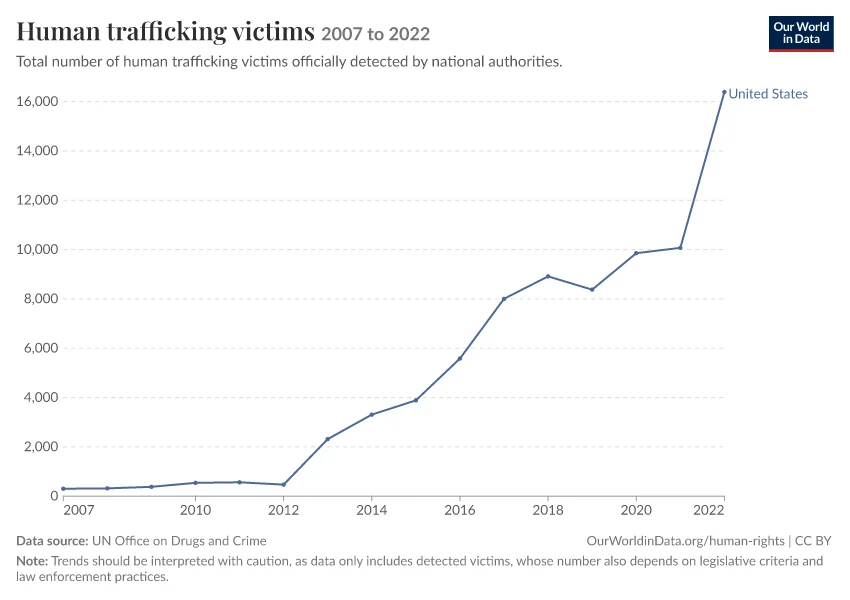

Q6. Are the statistics trustworthy? What can and cannot be derived

Human trafficking victims officially detected by national authorities: United States, 2007-2022. Our World in Data, from UNODC | Date: Downloaded 2026-10-17. U.S. victims reported to UNODC: 469 (2012) jumps to 2,315 (2013) and 16,390 (2022). The jump is a change in what the U.S. reports (from federal case victims to DOJ-funded service-provider clients), not a 35-fold rise in trafficking
Source: https://ourworldindata.org/grapher/human-trafficking-victims?country=~USA https://ourworldindata.org/grapher/human-trafficking-victims.png?country=~USA